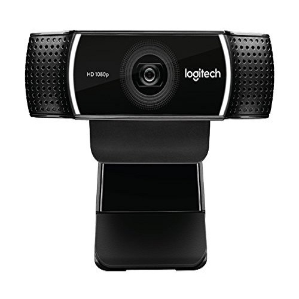

⠀
Tipos de Camaras:⠀
QuickCam: Era un dispositivo que se conectaba a un Macintosh de Apple o un ordenador con Windows y tenía una resolución de apenas 0.08 MP (320x240 píxeles), impresionante para la época.⠀
⠀
Logitech Quickcam Pro 9000: Imágenes con detalles perfectos y nítidos con QuickCam Pro 9000. Componentes ópticos Carl Zeiss y enfoque automático para imágenes siempre nítidas, incluso en primeros planos.⠀
⠀
D-Link SECURICAM DCS910 10/100 Fast Ethernet Internet Camera: Equipada con su propio servidor Web, esta cámara IP se conecta a una red doméstica para transferir imágenes en tiempo real a través de Internet a cualquier ordenador equipado con un navegador Web. A diferencia de una Webcam, no necesita un ordenador para funcionar.⠀
⠀
Logitech C922:es compatible con las soluciones XSplit y Open Broadcaster Software. Proporciona una resolución de 1,080 x 720 a 30 FPS y una resolución de 1,280 x 720 a 30/60 FPS. Estas resoluciones están respaldadas por un enfoque automático de 20 pasos, un campo de visión de 78 grados, dos micrófonos omnidireccionales integrados y corrección automática de poca luz. 